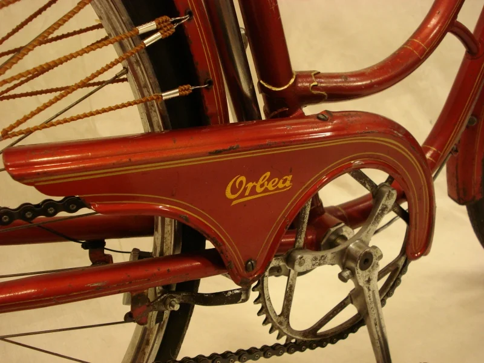
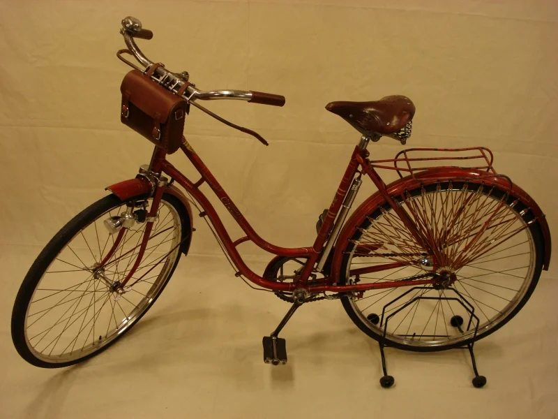
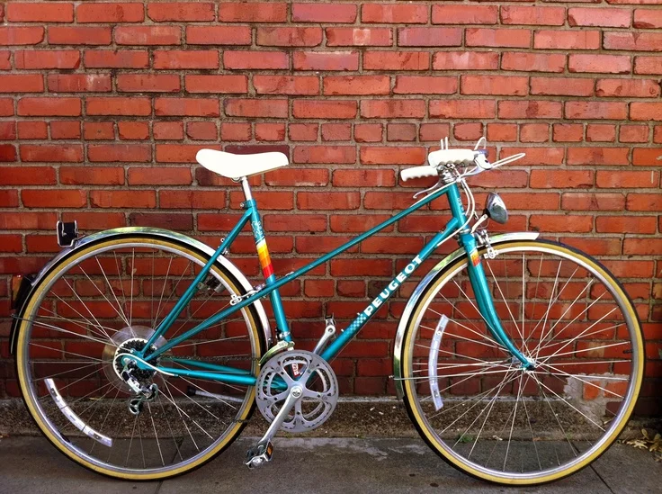
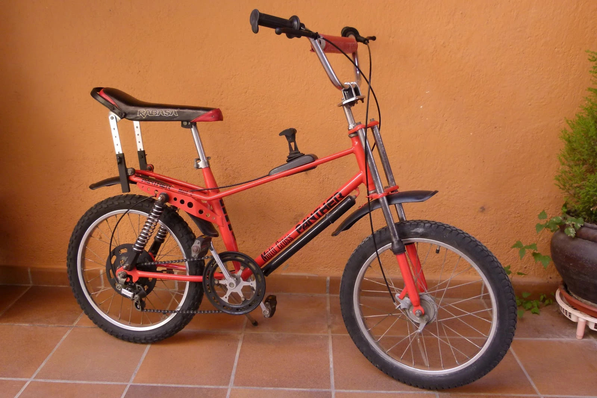
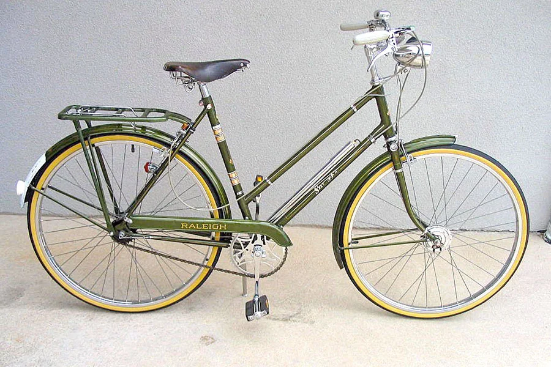

Algunos proyectos y acabados
Galería provisional. En la siguiente visita añadimos proyectos reales del taller.






Recuperamos historia, tacto mecánico y estética original. Sin prisas. Con criterio.
Proceso real. No industrial. No cadenas de montaje.
Evaluación real de cuadro, piezas recuperables y viabilidad del proyecto.
Proceso artesano. Pulidos, mecánica fina, pintura, estética y piezas OEM si es posible.
Bici lista para rodar o exponer. Informe final + recomendaciones futuro mantenimiento.
Galería provisional. En la siguiente visita añadimos proyectos reales del taller.
Escríbenos, cuéntanos el modelo y la idea. Aquí se trata con mimo.